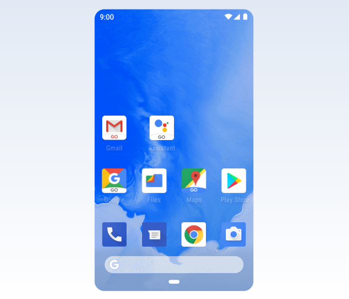

Chegou a Black Friday, o Natal ou o seu aniversário — ou você quer/precisa — e a missão é escolher um novo celular? No meio desse mar de opções parece impossível fazer uma escolha acertada. O preço sempre acaba falando alto. Mas, antes de comparar valores, vale a pena definir que tipo de aparelho você precisa e concentrar esforços. Veja dicas de como comprar um smartphone ideal para o seu tipo de uso.
Para este guia funcionar, separei cinco tipos de uso (perfis de consumidor) e o que podemos sugerir para cada um deles conforme a nossa experiência com os reviews.
🔹Baratinho — se o problema é orçamento, opções de entrada podem funcionar;
🔹Fotos — a qualidade da câmera é ingrediente fundamental, senão o principal;
🔹Gamer — hardware é tudo, um topo de linha para ninguém botar defeito;
🔹Uso comum — redes sociais, mensageiros, fotos simples, sem muitas exigências;
🔹Viciados — que ficam conectados 100% do tempo e precisam de muita bateria;
Baratinho 💲
Um celular muito baratinho pode sair caro, principalmente porque você pode ficar insatisfeito com o aparelho e ter que substituí-lo nos próximos meses. Contudo, numa emergência, o preço costuma ser o fator decisivo para tornar viável a compra de um novo smartphone. O importante é observar se o baratinho que está na sua mira é igual ou melhor que o seu atual celular — que quebrou, deu defeito e você precisou trocar.
Escolher um celular aquém do seu uso ou fazer um downgrade vai deixá-lo frustrado. O que faz alguns celulares serem muito mais baratos que outros são as peças usadas na sua construção: processador, memória RAM, câmera e etc. Para baratear os custos, esses itens tendem a ser os mais básicos, resultando num desempenho bem abaixo dos topo de linha.
Android Go
Para fugir de engasgos, travamentos e outros problemas que você pode vir a ter, uma boa dica é buscar um smartphone com Android GO. O sistema é uma versão otimizada pelo Google para rodar justamente em aparelhos mais modestos, com 1 GB de RAM.
Os aplicativos do próprio Google são otimizados e reduzidos para funcionar melhor, como é o caso do YouTube Go, que permite fazer download de vídeos por Wi-Fi para assistí-los offline. Em smartphones com Android Go, a Google Play Store traz uma categoria em batizada de “Otimizados para o seu dispositivo” que mostra quais aplicativos não-Google são voltados para smartphones mais simples, como o Facebook Lite, o Messenger Lite e o Spotify Lite. Esses apps, além de ocuparem menos espaço (a versão Lite do Facebook tem apenas 1,3 MB), gastam menos processamento e dados.
iPhone barato?
Se tem uma coisa que o iPhone não é, é baratinho. Se você encontrou algum modelo por menos de R$ 1.000, fuja para as montanhas. Você pode estar diante de uma falsificação, de um aparelho usado ou de um modelo muito, mas muito antigo. O iPhone 5C, por exemplo, foi lançado em 2013 (estamos em 2019, são seis anos de defasagem), o iPhone 5 em 2012.
Um aparelho tão antigo não terá suporte à versão mais atualizada do iOS. O iOS 13, por exemplo, está disponível a partir do iPhone 6s e iPhone SE, lançados em 2015 e 2016. Mesmo esses já estão com os dias contados, pois não devem receber o próximo iOS 14.
Mercado cinza
Outra questão comum é encontrar celulares intermediários a preço de smartphones de entrada no chamado
“mercado cinza”. Geralmente, isso acontece com marcas chinesas, telefones refurbished
(recondicionados, reembalados ou consertados) e/ou importados por baixo dos panos. Isso quer dizer
que esses aparelhos, por não serem homologados ou vendidos por empresas com representação nacional,
podem não ter cobertura prevista na garantia ou nenhum local de reparos por parte do fabricante no
Brasil.
Em casos mais graves, celulares piratas — que não possuem um número IMEI cadastrado no banco de
dados da GSMA, uma associação global de operadoras — podem ser bloqueados pela Anatel. Não confunda
com qualquer smartphone importado, porém. Dispositivos que foram homologados em outro país e estão
cadastrados em um banco de dados global (IMEI DB) não serão bloqueados; mas é sempre bom conferir.
Portanto, procure sempre lojas confiáveis, peça a sua nota fiscal e foque em marcas conhecidas. Isso
evita maiores dores de cabeça já que o seu objetivo é gastar pouco.
Smartphones de entrada:
São aparelhos superiores aos de entrada (de 32 GB a 64 GB de armazenamento interno, frente aos 16 GB dos baratinhos, com memória RAM superior a 1 GB), mas que não disputam em qualidade com intermediários premium ou mesmo os topo de linha. De todo modo, é um upgrade aos modelos muito baratos, e são vendidos por até R$ 1,5 mil.
Smartphones intermediários:
🔹 Moto G8 PlayViciados 🔋